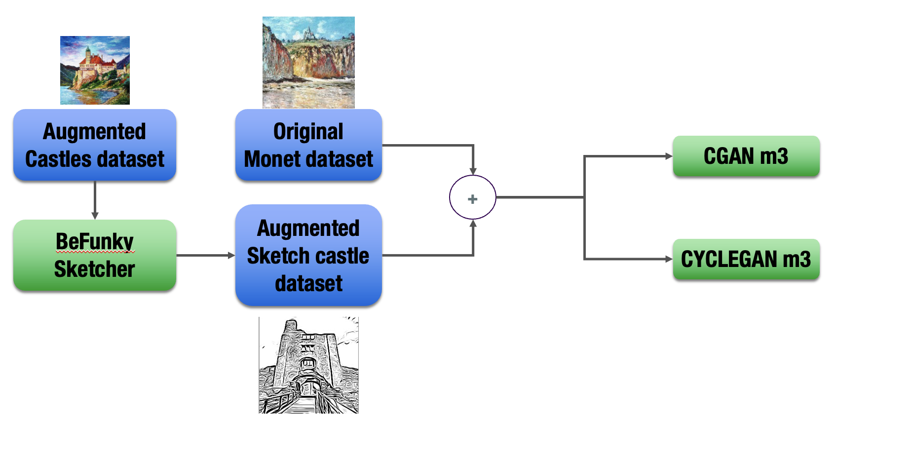

Comparison of cGANs vs CycleGANs for Image Augmentation by Sketching
Role
For this project, I worked by myself on creating a novelty dataset of images to train and
test my models, as well as the training of several different types of GAN-based
architectures.
Problem
Nowadays, the popularity of Generative Adversarial Networks has grown more extensive thanks to the
use of online tools such as DALL-E, for example. This technology creates an image-based
on a written description provided by a user. Another example is the new feature released
in the BETA software of Photoshop Adobe where we can make use of a generative tool which
will create parts of images to correct defects on photographs, with the intention of
for example, delete people, or objects or even creating something that was not originally in the
photograph.
With this in mind, I tackled a problem. How to improve the generation of some aspects on
images when the original dataset does not contain that element, and because of this, the
model has no way of learning it. For this purpose, I decided to use Generative Adversarial
Networks, which I found extremely powerful, exciting and dangerous. If you have worked with
GANs before, you should know that a typical exercise to learn how to use them is to train a model
to create an image with the same impressionist technique as if Van Gogh or Monet had
painted it. On top of this, there is another project which conditions the generation of the
images, such as we described before. We can condition the creation based on text or
other images. For this purpose, a few years ago, a group of researchers created a new architecture
based on GANs called "Conditional GANs" or "cGANs." If you feel curious about Dr. Isola's work on
image-to-image (i2i) translation, please use this link to download my final report, which has the
quality of an academic paper. link to paper
Please look at the following image and appreciate the work of an i2i model. In this
case, the cGAN was trained to transform a basic monochromatic landscape sketch into a
colour image with an impressionist design. This is no easy task, and the beauty of the cGAN
relies on the wide range of possible applications. In the image below, we can appreciate the
basic black and white sketch, followed by the image it generated and, at the end, the actual image
from which the drawing was made.
At the same time as cGANs were introduced and Pix2Pix was released to the public,
another architecture was proposed: the Cycle GAN. One of the problems of cGANs is that
while training, you should have pairs of images, for example, a sketch and the painting,
or maybe a pic of a landscape during the day and another at night. Cycle GANs allow the user
to train the model without necessarily having paired images, as they train two generators
and two discriminators.
Now, let me introduce the purpose of my project and also the main problem. As you can
appreciate in the image above, the input for the model is a landscape with a tiny
castle. During the impressionist time, artists painted fewer castles than
in other periods of art. Most importantly, the available datasets do not contain images
of castles. Initially, my idea was to create a model which could be used in real life,
for example, in a museum. Allow visitors to draw a sketch, scan it and then make our
model transform the sketch into their very own piece of art, for example, a painting by
Van Gogh or Rembrandt. With this in mind, I used a web service to transform the monet paintings
into sketches and then trained both architectures to perform i2i translation.
When I gave my model a sketch with a castle, the output was very unrealistic. As you can see
in the picture above, it looks like just a tiny mountain. This is precisely the problem I want
to solve: how to improve the quality of image generation with little to no data. My
project will tackle Data Augmentation with a different approach and not just zooming in or
rotating the same image.
Solution
To begin my project, I started by collecting as many images of castles painted as if
they were impressionist paintings. As I mentioned, this was challenging as few are on the web. Please refer to the image below to check the pipeline. Once I have
my paintings, I will use the web service mentioned before to convert the paintings into
black-and-white sketches. This dataset only consisted of 50 paired images, and I
called it CastleDataset. This dataset will be used to train both architectures, the
cGAN and the Cycle GAN, and here I will do data augmentation. I will ask the previously
trained models (M2) to generate as many images of castles as possible, but not by themselves. To help the quality of the images, I created a support sketch dataset simply by taking
sketches of current castles and asking the models trained with the Castle Dataset to
turn them into impressionist paintings. This new dataset will be called the Augmented
Castle Dataset.
Now that I have a dataset with more than 1,000 images of impressionist castles, I am ready
to do the final step. I will be merging the Monet dataset with my Augmented Castle
Dataset to train one last batch of models (M3). Please remember that I am constantly
training a cGAN and a Cycle GAN. Refer to the image below to see a flow diagram
of this process. Once I had introduced my last models, I asked them to transform
pictures from sketches one last time, and I compared Frechet's Inception Distance
metric (a form of comparing two pictures used in academia and especially in i2iT tasks)
of my final cGAN and Cycle GAN to see which architecture gives the best results.

As part of the results, let me say that I consider significant the amount of time
it takes to train a model and the following graph shows how long it takes each model
to qualify. As you can see, Cycle GANs take longer as they obviously train twice as many
models.
Now, the most critical part is how well each model generates images after
being trained with our augmented dataset. Please refer to the image below and check how
, in general, cGANs have a lower FID score (this means images are better generated) when
compared to Cycle GANs. But the final cGAN model is crushing the Cycle GAN model
Now, the original papers on which I based my research use an alternative way of evaluating
the models. The researchers made use of a web platform called Amazon Tucker. Where
you make surveys to real people and ask them to perform different tasks. As I had zero
budget for my project, I did not use this resource but asked 30 of my friends
to guess which image was actual and which was generated by the AI. The results below
show that cGANs again won and fooled people more than Cycle GANS.
Before I finish this post, let me show you some of the final generations. The first image below
will show the paintings generated by the final M3 cGAN model trained with the original Monet
Dataset together with our Augmented Castles Dataset. The last image will show the results
obtained by the Cycle GAN model. As you may conclude, it is not worth the time to train a
Cycle GAN for this type of Data Augmentation purposes.
Code and Further Information
To learn more about my work, visit the following link to download my report
link to report
To take a look at my code which was made in Python and in a Jupyter Notebook please
click the following Link to code
To see the datasets and the complete collection of images, both base and the generated ones
click the following link to images